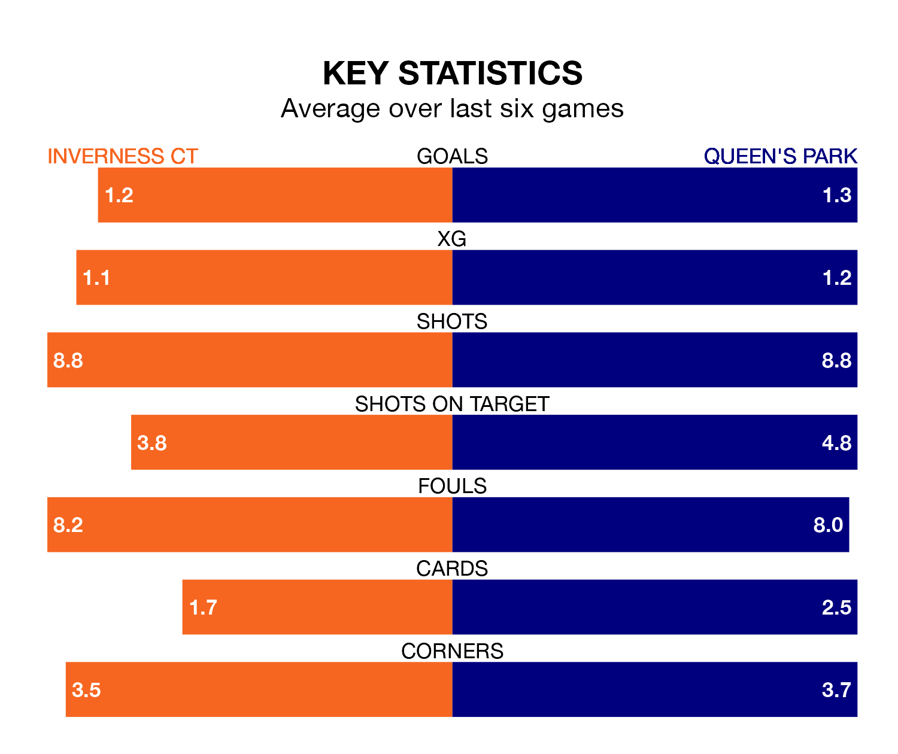

Struggling Inverness CT face Queen's Park at the Tulloch Caledonian Stadium on Saturday looking to build on a win in their last league outing.
After securing all three points with a 3-2 victory over Raith Rovers on January 27, ICT sit eighth in the Championship.
They travel to play a Queen's Park side ninth in the standings, who lost in their last match, 2-1 against Ayr United.
In Ruari Paton, Queen's Park have the league's most on-form striker so far this season. He has notched 11 goals in 21 appearances.
His goal rate of one every 171 minutes is quicker than that of Billy McKay, Inverness CT's top scorer with a goal every 280 minutes, and a total of six goals in 22 games.
In the last 10 years, Inverness CT and Queen's Park have played each other on seven occasions. Inverness CT won two of them, Queen's Park three, and they drew twice.
On average, ICT scored 1.6 goals and the Spiders 1.1 in those matches.
Their last meeting was on December 9, when Inverness CT won 4-1 away.
With 26 goals in 22 games so far this season, ICT are scoring at below the league average rate with 1.2 goals per game. But they are conceding fewer than average too, letting in 27 goals at a rate of 1.2 per game.
The Spiders are also below average scorers, with 1.3 goals per game, compared to a league average of 1.4. They have conceded 2.0 goals per game.
The home team are in mixed form in the Championship, with two wins and two draws from their last six games.
With two wins and a draw over that period, the visitors' form is slightly worse – they have taken seven points from 18, compared to Inverness CT's eight.
Saturday's match will be refereed by Euan Anderson, who has taken charge of six Championship games so far this season, issuing no red cards and booking 17 players. He has awarded one penalty.
The last Inverness CT game Anderson refereed was a 1-1 away draw with Dunfermline Athletic on November 18. He is yet to oversee a match featuring Queen's Park this season.
Updated: 10:40 (UTC), 01/02/24